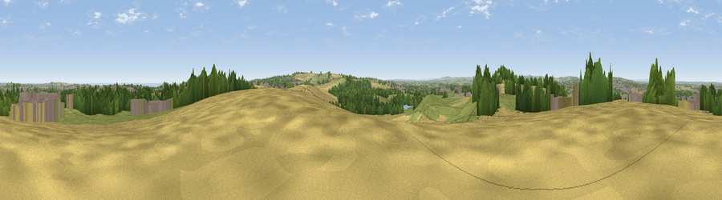

Viewpoint near New Herrington
#8430 in England · top 13% of its area beats it · near New HerringtonWhere it is
The exact computed spot (NZ 34475 54775). Click the marker for map links.
The view, rendered

A 360° render of this exact spot computed from the terrain model, tree cover and land cover — summer colours, afternoon light, calibrated against photographs of famous viewpoints. Real trees, hedges and buildings will differ in detail.
The panorama
Grey silhouette: terrain skyline in each direction (720 bearings, Earth curvature and refraction included). Dashed green: skyline with trees (+15 m) and buildings (+8 m) as obstacles. Blue strip: how far the ground is visible on each bearing.
Where the view opens
Wedge length = distance to the farthest visible ground on that bearing (vegetation-aware). Rings at 10, 25 and 50 km.
What fills the view
35% grassland · 23% woodland · 22% built-up · 18% cropland · 3% water
Angular shares of the visible panorama (visual magnitude), not map area. Landscape diversity 0.63 (0–1 Shannon).
Key numbers
More beautiful places nearby
The staircase of upgrades: each row has a higher view potential than everything closer. Driving times are estimates from straight-line distance, calibrated against real road routing — check an actual route before setting out.
| Place | Direction | Drive | Score |
|---|---|---|---|
| Penshaw Hill | WSW · 1 km | ~3 min | 75.1 |
| Viewpoint near Houghton-le-Spring | SE · 5 km | ~11 min | 76.0 |
| Viewpoint near Sunniside | WNW · 13 km | ~23 min | 77.6 |
| Pontop Pike | W · 19 km | ~33 min | 77.8 |
| Viewpoint near Lazenby | SSE · 43 km | ~63 min | 86.4 |
| Warsett Hill | SE · 48 km | ~69 min | 86.8 |
| Viewpoint near Easington | SE · 53 km | ~74 min | 90.2 |
| The Knoll | S · 474 km | ~438 min | 91.0 |
54.88654, -1.46412 · source: screening · position refined by local search. Computed location — check access rights before visiting.